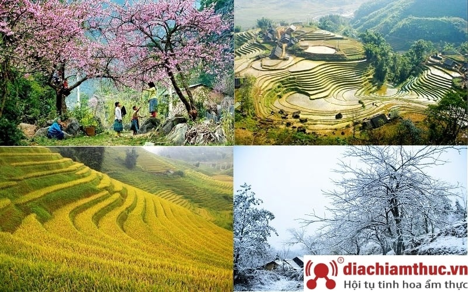
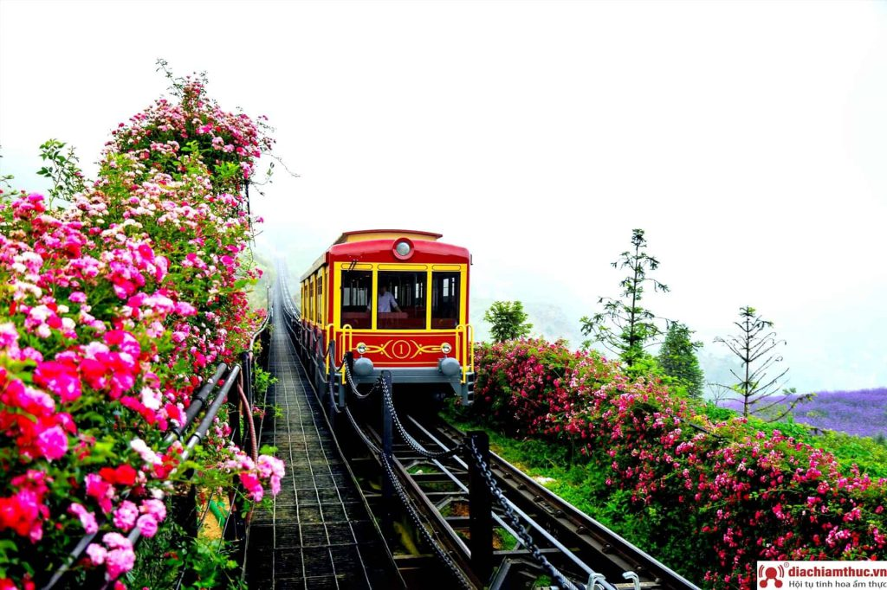
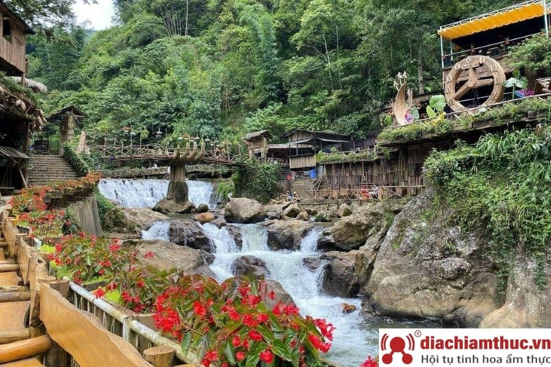
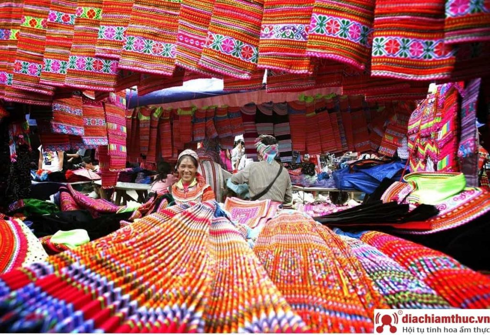

Sapa là thị xã xinh đẹp trong sương. Dù nhỏ nhưng Sapa có vô số địa điểm đáng để bạn khám phá. Muốn cảm nhận, khám phá hết vẻ đẹp của Sapa có lẽ các bạn phải dành ra ít nhất 4 đến 5 ngày. Nhưng đâu phải ai cũng có nhiều thời gian như vậy đúng không nào? Hơn nữa, cũng nên để dành một số địa điểm để còn có cớ quay lại Sapa và thấy nét mới mẻ chứ nhỉ? Đa phần du khách đến Sapa thường lưu trú lại 3 ngày 2 đêm. Bởi vậy chúng tôi sẽ gợi ý cho các bạn những địa điểm tuyệt vời để khám phá trong hành trình du lịch tự túc của mình nhé.
Nếu muốn ngắm toàn cảnh thung lũng Mường Hoa xinh đẹp, các bạn đừng bỏ qua chuyến tàu hoả Mường Hoa. Chuyến tàu hoả này khai trương vào tháng 3 năm 2018. Đây là chuyến tàu giúp du khách chiêm ngưỡng trọn vẹn những vẻ đẹp của thung lũng Mường Hoa.
Hành trình này dài 2km, giúp bạn thu vào tầm mắt những quang cảnh thiên nhiên kì vĩ của núi rừng, thung lũng. Đặc biệt, bạn sẽ có những tấm hình checkin ấn tượng với con tàu. Bởi tàu được thiết kế theo phong cách của những con tàu cổ châu Âu. Giá vé của tàu hoả Mường Hoa là 100k/người nhé. Đừng bỏ lỡ chuyến tàu xinh đẹp này.
Cái tên bản Cát Cát gợi ra một chút gì đó thật đáng yêu phải không nào? Đây là nơi sinh sống của người H’mông. Bản làng xinh đẹp này nằm cách thị trấn Sapa khoảng 2 km. Các bạn sẽ thấy cả một cộng đồng người H’Mông sống quây quần bên dòng thác Cát Cát hay còn gọi là thác Tiên Sa. Cả bản làng nằm dưới chân núi Hoàng Liên Sơn, bao quanh bởi núi rừng trữ tình, thơ mộng.
Bạn không chỉ được ngắm nhìn thiên nhiên, núi rừng Sapa mà khi đến bản Cát Cát bạn còn được ghé thăm những người Mông. Các bạn được nhìn họ dệt vải, dệt thổ cẩm, xem họ làm ruộng. Người dân H’Mông sống thật thà, chất phác và họ rất hay cười. Bao mệt mỏi của bạn tan biến trong chốc lát. Giá vé ở đây là 70km
Đến Sapa bạn không thể không chinh phục đỉnh Fansipan. Đây được xem là nóc nhà Đông Dương. Chinh phục đỉnh Fansipan chính là mục tiêu, là ước mơ và thử thách của rất nhiều người. Hầu hết các bạn trẻ đều vô cùng háo hức với thử thách chinh phục đỉnh núi này. Hiện nay, việc chinh phục đỉnh Fansipan đã thuận lợi hơn rất nhiều nhờ hệ thống cáp treo của tập đoàn Sungroup.
Vé cáp treo là 700k/ người khứ hồi. Đi 15 phút là bạn chạm được đến với đỉnh Fansipan, quá dễ dàng. Khi chinh phục đỉnh Fansipan bạn sẽ thỏa thích ngắm mây trời. thậm chí những hôm mây bảng lảng, bạn sẽ có cảm tưởng như chạm tay vào mây trời. Còn gì tuyệt vời hơn nữa mà bạn không thử chinh phục thử thách này.
Chợ phiên Sapa chính là nét đẹp sinh hoạt mà bạn không nên bỏ qua khi đến nơi đây. Chợ Phiên Sapa cũng có thể ví như chợ tình Hà Giang vậy. chợ họp vào thứ 7, chủ nhật. vừa là dịp để người dân mua bán. Vừa là nơi hẹn hò của trai gái lứa đôi.
Giữa khung cảnh núi rừng thơ mộng, chợ phiên Sapa đẹp như thơ với những món hàng hay ho của người vùng cao. Đó là những cuộn vải thổ cẩm, những túi măng rừng, rau rừng…Tất cả làm nên sắc màu chợ phiên vùng cao hấp dẫn.
Một chuyến đi Sapa luôn là mong ước của bất cứ tín đồ du lịch nào. Và đã đến Sapa một lần bạn sẽ lưu luyến, mong muốn được trở lại đây nhiều lần nữa. Hãy đến với Sapa để hít căng lồng ngực bầu không khí trong lành, mát mẻ, để ngắm mây bảng lảng trên đình núi, để đắm say trong tiếng khèn môi. Sapa ngọt ngào mời gọi bạn như một thiên đường hạ giới